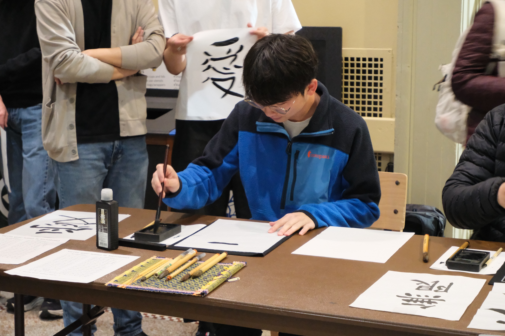

Hanami Festival 2026
May 9, 2026



Connecting Japan and MIT.
JAM introduces and promotes Japanese culture, fosters social connections and cultural exchange, and supports academic outreach rooted in Japanese perspectives.
See what is onHistorically, JAM began as a community group for Japanese PhD students at MIT, a small community of roughly 20 people across the Institute. Today, its events welcome the broader MIT community.
JAM Constitution →Purpose
The mission below follows the JAM Constitution and keeps the organization centered on MIT, Japan, and exchange.
Introduce and promote Japanese culture to the MIT community.
Foster social connections and cultural exchange among MIT graduate students, postdocs, and other community members.
Facilitate academic outreach and collaboration rooted in Japanese perspectives within the MIT ecosystem.
JAM Officers 2025-2026. These are the current officers organizing JAM programs, not the full jam-all community. Officer roles are open to MIT graduate students, postdocs, researchers, Harvard graduate students studying at MIT, and their families.
Officer interest →
President

Vice President

Treasurer


The officer team is open to MIT graduate students, postdocs, researchers, Harvard graduate students studying at MIT, and their families. JAM works alongside related Japanese community groups including MIT JSU for undergraduates and Sloan Japan for the MBA/Sloan community.
Join the officer team →JAM programs are organized by the officer team, while the events themselves are built for the broader MIT community.

Recurring programs that can grow year by year, from Hanami to lecture-style events such as Beneath the Great Wave.
About 30 members play street basketball most weekends, join MIT intramural play, and face Boston Japan Basketball Club several times a year.

JAM helps support campus visits for Japanese high school students and other groups interested in seeing MIT from the inside.
Support
Support is organized around individual events. Recent JAM programs have received support from MIT SGFC Funding, the MIT School of Quality of Life Grant Program, Taktopia, and GPI-US. Beneath the Great Wave is supported by the Consulate-General of Japan in Boston.
JAM welcomes new company and organization partners for cultural programs, lectures, student welcome events, and community activities.